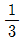
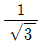
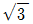
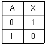
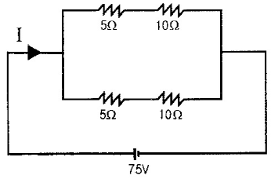
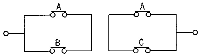
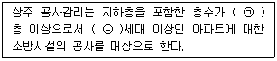

소방설비산업기사(전기) (2015-09-19 기출문제)
1과목: 소방원론
1. 건축물의 방화계획에서 공간적 대응에 해당되지 않는 것은?
- 대항성
- 회피성
- 도피성
- 피난성
(정답률: 66%)

2. 다음 중 난연효과가 가장 큰 것은?
- 나트륨
- 칼슘
- 마그네슘
- 할로겐족 원소
(정답률: 80%)
3. 다음 중 물을 무상으로 분무하여 고비점 유류의 화재를 소화할 때 소화효과를 높이기 위하여 물에 첨가하는 약제는?
- 증점제
- 침투제
- 유화제
- 강화액
(정답률: 64%)
4. 연기의 농도가 감광계수로 10일 때의 상황으로 옳은 것은?
- 가시거리는 0.2~0.5m 이고 화재 최성기 때의 농도
- 가시거리는 5m 이고 어두운 것을 느낄 정도의 농도
- 가시거리는 20~30m 이고 연기감지기가 작동할 정도로 농도
- 가시거리는 10m 이고 출화실에서 연기가 분출할 때의 농도
(정답률: 74%)
5. 부피비로 메탄 80%, 에탄 15%, 프로판 4%, 부탄 1% 인 혼합기체가 있다. 이 기체의 공기 중 폭발하한계는 약 몇 vol% 인가? (단, 공기 중 단일 가스의 폭발하한계는 메탄 5vol%, 에탄 2vol%, 프로판 2vol%, 부탄 1.8vol% 이다.)
- 2.2
- 3.8
- 4.9
- 6.2
(정답률: 74%)
6. 화재에 관한 일반적은 이론에 해당하지 않는 것은?
- 착화온도와 화재의 위험은 반비례한다.
- 인화점과 화재의 위험은 반비례한다.
- 인화점이 낮은 것은 착화온도가 높다.
- 온도가 높아지면 연소범위는 넓어진다.
(정답률: 65%)
7. 물의 소화작용과 가장 거리가 먼 것은?
- 증발잠열의 이용
- 질식 효과
- 에멀젼 효과
- 부촉매 효과
(정답률: 81%)
8. 다음 중 분진폭발을 일으키지 않는 물질은?
- 시멘트
- 알루미늄(Al)
- 석탄
- 마그네슘(Mg)
(정답률: 84%)
9. 한계산소농도에 대한 설명으로 틀린 것은?
- 가연물의 종류, 소화약제의 종류와 관계없이 항상 일정한 값을 갖는다.
- 연소가 중단되는 산소의 한계농도이다.
- 한계산소농도는 질식소화와 관계가 있다.
- 소화에 필요한 이산화탄소소화약제의 양을 구할 때 사용될 수 있다.
(정답률: 84%)
10. 금수성 물질일 아닌 것은?
- 칼륨
- 나트륨
- 알킬알루미늄
- 황린
(정답률: 76%)
11. 주된 연소 형태가 표면 연소인 가연물로만 나열된 것은?
- 숯, 목탄
- 석탄, 종이
- 나프탈렌, 파라핀
- 니트로셀룰로오스, 질화면
(정답률: 87%)
12. 어떤 기체의 확산속도가 산소보다 4배 빠르다면 이 기체는 무엇으로 예상할 수 있는가?
- 질소
- 수소
- 암모니아
- 이산화탄소
(정답률: 75%)
13. 할로겐화합물 소화약제의 특징으로 옳지 않는 것은?
- 부식성이 크다.
- 소화속도가 빠르다.
- 전기절연성이 높다.
- 가연물과 산소의 화학반응을 억제한다.
(정답률: 68%)
14. 15℃의 물 10kg 이 100℃의 수증기가 되기 위해서는 약 몇 kcal의 열량이 필요한가?
- 850
- 1650
- 5390
- 6240
(정답률: 58%)
15. 다음 중 황린의 연소 시에 주로 발생되는 물질은?
- P2O
- PO2
- P2O3
- P2O5
(정답률: 77%)
16. B급 화재에 해당하지 않는 것은?
- 목탄의 연소
- 등유의 연소
- 아마인유의 연소
- 알코올류의 연소
(정답률: 85%)
17. 다음 중 제거소화법이 활용되기 가장 어려운 화재는?
- 산불화재
- 화학공정의 반응기 화재
- 컴퓨터 화재
- 상품 야적장의 화재
(정답률: 68%)
18. 자연발화물 방지하는 방법이 아닌 것은?
- 습도가 높은 곳을 피한다.
- 저장실의 온도를 높인다.
- 통풍을 잘 시킨다.
- 열이 쌓이지 않게 퇴적방법에 주의한다.
(정답률: 84%)
19. 피난계단에 대한 설명으로 옳은 것은?
- 피난계단용 방화문은 을종방화문을 설치해도 무방하다.
- 계단실은 건축물의 다른 부분과 불연구조의 벽으로 구획한다.
- 옥외계단은 출입구외의 개구부로부터 1m 이상의 거리를 두어야 한다.
- 계단실의 벽에 면하는 부분의 마감만은 가연재로 허용된다.
(정답률: 56%)
20. 소화 분말 중 열분해로 인하여 부척성이 좋은 메타인산이 생성되어 A급 화재에도 탁원한 효과를 발하는 소화약제는?
- NH4H2PO4
- NaHCO3
- KHCO3
- Al2(SO4)3
(정답률: 74%)
2과목: 소방전기회로
21. 직류전동기의 속도제어 방법이 아닌 것은?
- 계자제어법
- 저항제어법
- 전압제어법
- 전류제어법
(정답률: 63%)
22. 유도 전동기의 Y-△ 기동 시 기동 토크와 기동 전류는 전전압 기동 시의 몇 배가 되는가?



- 3
(정답률: 58%)
23. 제어량은 어떤 일정한 목표값으로 유지하는 것을 목적으로 하는 제어법은?
- 추종제어
- 비례제어
- 정치제어
- 프로그램제어
(정답률: 71%)
24. 100V의 전압계가 있다. 이 전압계를 써서 300V의 전압을 측정하려면 배율기의 저항은 몇 Ω 이어야 하는가? (단, 전압계의 내부저항은 6000Ω 이라고 한다.)
- 6000
- 8000
- 10000
- 12000
(정답률: 55%)
25. 선간전압이 220V인 3상 전원에 임피던스가 Z = 8 + j6Ω 인 3상 Y부하를 연결할 경우 상전류는 몇 A인가?
- 7.3
- 12.7
- 18.4
- 22.0
(정답률: 64%)
26. 가변용량 소자에 해당되는 것은?
- 바랙터다이오드
- 포토다이오드
- 터널다이오드
- 제너다이오드
(정답률: 50%)
27. 4가 원자의 순수한 결정에 3가인 불순물을 넣어서 전자가 뛰어나간 빈자리인 정공(hole)을 만드는 반도체는?
- N형 반도체
- P형 반도체
- PN 접합 다이오드
- SCR
(정답률: 61%)
28. 다음 진리표의 논리회로는?

- AND
- OR
- NOT
- NAND
(정답률: 74%)
29. 저임피던스 부하에서 고전류 이득을 얻으려고 할 때 사용되는 증폭방식은?
- 컬렉터접지
- 이미터접지
- 베이스접지
- 바이패스접지
(정답률: 55%)
30. 서지전압에 대한 회로보호를 주목적으로 사용되는 것은?
- 바리스터
- 제너다이오드
- 서미스터
- SCR
(정답률: 73%)
31. cm당 권수가 100인 무한장 솔레노이드에 2mA의 전류가 흐른다면 솔레노이드 내부의 자계의 세기[AT/m]는?
- 0
- 10
- 20
- 50
(정답률: 51%)
32. 그림과 같은 회로에서 전전류 I는 몇 A인가?

- 6
- 8
- 10
- 14
(정답률: 78%)
33. 다음 그림과 같은 유접점 회로의 논리식은?

- A+BC
- B+AC
- AB+B
- AB+BC
(정답률: 83%)
34. 정전압 다이오드라고 하며 항복전압 이상으로 전압을 점점 증가시켜도 다이오드에 걸리는 전압은 더 이상 증가하지 않고 일정한 상태가 유지되는 성질을 이용하여 기기를 보호하기 위해 만든 다이오드는?
- 터널다이오드
- 제너다이오드
- 포토다이오드
- 발광다이오드
(정답률: 82%)
35. 전선을 접속할 때 주의하여야 할 사항이 아닌 것은?
- 접속부는 노출시켜 확인이 가능하도록 할 것
- 접속부분의 절연성능은 타 부분과 동등이상이 되도록 할 것
- 접속점의 전기저항이 증가하지 않도록 할 것
- 전선의 인장강도를 20%이상 감소시키지 말 것
(정답률: 81%)
36. 트랜지스터의 전극 명칭이 아닌 것은?
- 이미터
- 베이스
- 애노드
- 컬렉터
(정답률: 68%)
37. 전류의 열작용과 직접적인 관련이 있는 것은?
- 옴의 법칙
- 플레밍의 왼손법칙
- 가우스의 법칙
- 줄의 법칙
(정답률: 82%)
38. 어떤 파형의 교류전압이 있다. 그 평균값이 100V이고, 파형율은 1.1 이라고 하면 최대값은 약 몇 V 인가?
- 110
- 141
- 157
- 173
(정답률: 38%)
39. 저항이 일정할 때 전압을 2배로 하면 소비전력은 처음의 몇 배 인가?
- 0.25
- 0.5
- 2
- 4
(정답률: 70%)
40. 불연속제어의 제어방법으로 옳은 것은?
- 온·오프제어
- 미분제어
- 비례제어
- 적분제어
(정답률: 76%)
3과목: 소방관계법규
41. 3년 이하의 징역 또는 1천500만원 이하의 벌금에 해당하지 않는 것은?(오류 신고가 접수된 문제입니다. 반드시 정답과 해설을 확인하시기 바랍니다.)(관련 규정 개정전 문제로 여기서는 기존 정답인 1번을 누르면 정답 처리됩니다. 자세한 내용은 해설을 참고하세요.)
- 소방시설관리사증을 다른 자에게 빌려준 자
- 관리업의 등록을 하지 아니하고 영업을 한 자
- 소방용품의 형식승인을 얻지 아니하고 소방용품을 제조한 자
- 소방용품의 형식승인을 얻지 아니하고 소방용품을 수입한 자
(정답률: 71%)
42. 화재경계지구의 지정대상지역에 해당되지 않는 곳은?
- 시장지역
- 공장·창고가 밀집한 지역
- 소방용수시설 또는 소방출동로가 있는 지역
- 석유화학제품을 생산하는 공장이 있는 지역
(정답률: 72%)
43. 소방시설관리사시험의 응시자격은 소방설비산업기사 자격을 취득 후 몇 년 이상의 소방실무경력이 필요한가?
- 2년
- 3년
- 5년
- 10년
(정답률: 60%)
44. 방염성능기준 이상의 실내장식물 등을 설치하여야 하는 특정소방대상물이 아닌 것은?
- 종합병원
- 노유자시설
- 체력단련장
- 11층 이상인 아파트
(정답률: 80%)
45. 소방본부장 또는 소방서장은 화재경계지구 안의 관계인에 대하여 소방상 필요한 훈련 또는 교육을 실시할 경우 관계인에게 훈련 또는 교육 며칠전까지 그 사실을 통보해야 하는가?
- 3일
- 5일
- 7일
- 10일
(정답률: 56%)
46. 다음 ( )안에 알맞은 것은?

- ㉠8, ㉡300
- ㉠8, ㉡500
- ㉠16, ㉡300
- ㉠16, ㉡500
(정답률: 68%)
47. 소방시설의 작동기능점검을 실시한 자는 그 점검결과를 몇 년간 자체 보관하여야 하는가?
- 1년
- 2년
- 3년
- 4년
(정답률: 81%)
48. 제조소등에서 위험물을 유출·방출 또는 확산시켜 사람의 생명·신체 또는 재산에 대하여 위험을 발생시킨 자에 대한 벌칙은?
- 1년 이상 10년 이하의 징역
- 무기 또는 3년 이상의 징역
- 1년 이하의 징역 또는 1천만원 이하의 벌금
- 7년 이하의 금고 또는 2천만원 이하의 벌금
(정답률: 46%)
49. 특수가연물을 저장 또는 취급하는 장소에 설치하는 표지의 기재사항이 아닌 것은?
- 품명
- 최대수량
- 안전관리자의 성명
- 화기취급의 금지표시
(정답률: 75%)
50. 화재 또는 구조·구급이 필요한 상황을 허위로 1회 알린 자에게 부과하는 과태료는?(2021년 01월 21일 개정된 규정 적용됨)
- 100만원
- 200만원
- 400만원
- 500만원
(정답률: 43%)
51. 위험물안전관리법상 제3석유류의 정의로 옳은 것은?
- 중유, 클레오소트유 그 밖에 1기압에서 인화점이 섭씨 21도 이상 70도 미만인 것을 말한다.
- 등유, 경유 그 밖에 1기압에서 인화점이 섭씨 21도 이상 70도 미만인 것을 말한다.
- 중유, 클레오소트유 그 밖에 1기압에서 인화점이 섭씨 70도 이상 섭씨 200도 미만인 것을 말한다.
- 등유, 경유 그 밖에 1기압에서 인화점이 섭씨 70도 이상 섭씨 200도 미만인 것을 말한다.
(정답률: 60%)
52. 소방시설관리업의 등록기준 중 인력기준으로 틀린 것은?
- 주된 기술인력 : 소방시설관리사 1인 이상
- 보조기술인력 : 소방설비기사 또는 소방설비산업기사 2인 이상
- 보조기술인력 : 소방기술 인정 자격수첩을 교부받은 소방공무원은 3년 이상 근무한 자 2인 이상
- 주된 기술인력 : 소방기술사 1인 이상
(정답률: 52%)
53. 화재 위험도가 낮은 특정 소방대살물로서 옥외소화전을 설치하지 않아도 되는 경우가 아닌 것은?
- 불연성 건축재료 가공공장
- 불연성 물품을 저장하는 창고
- 석재 가공공장
- 소방기본법에 따른 소방대가 조직되어 24시간 근무하는 청사
(정답률: 62%)
54. 다음 중 자체소방대를 설치하여야 하는 사업소는?
- 위험물제조소
- 지정수량 3000배 이상의 위험물을 취급하는 제조소
- 지정수량 3000배 이상의 위험물을 보일러로 소비하는 일반취급소
- 지정수량 3000배 이상의 제4류 위험물을 취급하는 일반취급소
(정답률: 65%)
55. 건축허가등의 동의대상물의 범위로 옳은 것은?
- 차고·주차장으로 사용되는 층 중 바닥면적이 200제곱미터 이상인 층이 있는 시설
- 승강기 등 기계장치에 의한 주차시설로서 자동차 10대 이상을 주차할 수 있는 시설
- 지하층 또는 무창증이 있는 건축물로서 바닥면적이 100제곱미터 이상인 층이 있는 것
- 지하층 또는 무창증이 있는 건축물로서 공연장의 경우에는 50제곱미터 이상인 층이 있는 것
(정답률: 64%)
56. 소방시설관리업의 기술인력으로 등록된 소방기술자가 받아야 하는 실무교육의 주기 및 회수는?
- 매년 1회 이상
- 매년 2회 이상
- 2년마다 1회 이상
- 3년마다 1회 이상
(정답률: 65%)
57. 다음 중 위험물의 유별 성질에 대한 설명으로 옳지 않는 것은?
- 제1류 : 산화성 고체
- 제2류 : 가연성 고체
- 제4류 : 인화성 액체
- 제6류 : 자기반응성 물질
(정답률: 82%)
58. 건축허가등의 동의대상물이 아닌 것은?
- 연면적 150m2인 학교
- 연면적 150m2인 노유자시설
- 지하층이 있는 건축물로서 바닥면적이 150m2인 층이 있는 것
- 주차장으로 사용되는 층 중 바닥면적이 200m2인 층이 있는 시설
(정답률: 59%)
59. 소방기본법상 출동한 소방대원에게 폭행 또는 협박을 행사하여 화재진압·인명구조 또는 구급활동을 방해한 자에 대한 벌칙 기준은?(관련 규정 개정전 문제로 여기서는 기존 정답인 4번을 누르면 정답 처리됩니다. 자세한 내용은 해설을 참고하세요.)
- 1년 이하의 징역 또는 1000만원 이하의 벌금
- 1년 이하의 징역 또는 1500만원 이하의 벌금
- 3년 이하의 징역 또는 1500만원 이하의 벌금
- 5년 이하의 징역 또는 3000만원 이하의 벌금
(정답률: 71%)
60. 화재, 재난·재해 그 밖의 위급한 사항이 발생한 경우 소방대가 현장에 도착할 때까지 관계인의 소방활동에 포함되지 않는 것은?
- 불을 끄거나 불이 번지지 아니하도록 필요한 조치
- 소방활동에 필요한 보호장구 지급 등 안전을 위한 조치
- 경보를 울리는 방법으로 사람을 구출하는 조치
- 대피를 유도하는 방법으로 사람을 구출하는 조치
(정답률: 77%)
4과목: 소방전기시설의 구조 및 원리
61. 비상방송설비의 확성기 음성입력은 실외에 설치한느 경우 최소 몇 W 이상인가?
- 1
- 2
- 3
- 4
(정답률: 83%)
62. 주위온도가 일정상승률 이상이 되는 경우에 작동하는 것으로서 일국소에서의 열효과에 의하여 작동되는 감지기는?
- 차동식분포형 감지기
- 정온식스포트형 감지기
- 차동식스포트형 감지기
- 보상식스포트형 감지기
(정답률: 49%)
63. 비상콘셉트설비에 사용되는 비상전원 중 자가발전설비는 비상콘센트설비를 몇 분 이상 유효하게 작동시킬 수 있는 용량이어야 하는가?
- 10
- 20
- 30
- 60
(정답률: 62%)
64. 축전지의 자기방전을 보충함과 동시에 상용부하에 대한 전력공급은 충전기가 부담하도록 하되 충전기가 부담하기 어려운 일시적인 대전류 부하는 축전지로 하여금 부담하게 하는 충전방식은?
- 부동충전방식
- 균등충전방식
- 자가충전방식
- 과충전방식
(정답률: 71%)
65. 휴대용비상조명등을 보행거리 25m 이내마다 3개 이상 설치하여야 하는 장소는?
- 대형마트
- 쇼핑센터
- 지하상가
- 영화상영관
(정답률: 81%)
66. 실내의 바닥면적이 900m2인 경우 단독경보형감지기의 최소 설치수량은?
- 3개
- 6개
- 9개
- 12개
(정답률: 70%)
67. 화재안전기준에서 정하고 있는 유도등 및 유도표지에 대한 용어 정의 중 옳지 않은 것은?
- 유도등은 화재 시에 피난을 유도하기 위한 등이다.
- 피난구유도등은 피난구 또는 피난경로로 사용되는 출입구를 표시하여 피난을 유도하는 등이다.
- 통로유도등은 피난통로를 안내하기 위한 유도등이다.
- 거실통로유도등은 피난통로가 되는 복도에 설치하는 통로유도등이다.
(정답률: 73%)
68. 누설동축케이블은 화재 시 케이블 본체가 떨어지지 않도록 몇 m 이내마다 금속제 또는 자기제 등의 지지금구로 견고하게 고정시켜야 하는가?
- 2
- 4
- 6
- 8
(정답률: 69%)
69. 자동화재탐지설비의 발신기와 전화통화가 가능한 수신기는 몇 층 이상의 특정소방대상물에 설치하여야 하는가?
- 2
- 3
- 4
- 5
(정답률: 70%)
70. 비상콘셉트설비의 전원회로는 단상교류 220V인 것으로서 그 공급용량은 몇 kVA 이상이어야 하는가?
- 0.5
- 1
- 1.5
- 3
(정답률: 69%)
71. 제연설비의 설치장소에 있어서 제연구역 구획기준으로 옳은 것은?
- 하나의 제연구역의 면적은 600m2 이내로 할 것
- 거실과 통로는 상호 제연구획 할 것
- 통로상의 제연구역은 보행중심선의 길이가 50m를 초과하지 않도록 할 것
- 하나의 제연구역은 직경 50m 원내로 들어가 갈 수 있을 것
(정답률: 43%)
72. 자동화재탐지설비의 감지기 설치제외 장소가 아닌 것은?
- 부식성가스가 체류하고 있는 장소
- 파이트덕트 등 그 밖의 이와 비슷한 것으로서 2개층마다 방화구획된 것이나 수평단면적이 5m2 이하인 것
- 목욕실·욕조나 샤워시설이 있는 화장실·기타 이와 유사한 장소
- 실내의 용적이 20m3이하인 장소
(정답률: 42%)
73. 누전경보기의 공칭작동전류치는 몇 mA 이하이어야 하는가?
- 60
- 100
- 200
- 500
(정답률: 53%)
74. 무선통신보조설비에서 두 개 이상의 입력신호를 원하는 비율로 조합한 출력이 발생하도록 하는 장치는?
- 분배기
- 분파기
- 혼합기
- 증폭기
(정답률: 74%)
75. 자동화재속보설비 속보기의 합성수지 외함의 두께는?
- 1.2 mm이상
- 1.5 mm이상
- 3 mm이상
- 5 mm이상
(정답률: 55%)
76. 비상전원의 상태를 감시할 수 있는 장치가 없어도 되는 유도등은?
- 객석유도등
- 계단통로유도등
- 거실통로유도등
- 복도통로유도등
(정답률: 72%)
77. 유도등의 비상전원인 축전지의 용량은 당해유도등을 몇 분 이상 작동시킬 수 있어야 하는가? (단, 지하층을 제외한 층수가 11층 이상의 층)
- 당해유도등을 10분 이상 유효하게 작동시킬 수 있는 것
- 당해유도등을 20분 이상 유효하게 작동시킬 수 있는 것
- 당해유도등을 30분 이상 유효하게 작동시킬 수 있는 것
- 당해유도등을 60분 이상 유효하게 작동시킬 수 있는 것
(정답률: 55%)
78. 누전경보기의 전원은 분전반으로부터 전용회로로 하고 각 극에 개폐기 및 몇 A이하의 과전류차단기를 설치하여야 하는가?
- 15
- 20
- 25
- 30
(정답률: 78%)
79. 자동화재탐지설비를 설치하여야 하는 특정소방대상물의 기준으로 옳은 것은?
- 위락시설·숙박시설 및 복합건축물로서 연면적 500m2 이상인 것
- 동물 및 식물 관련시설 또는 묘지 관련시설로서 연면적 1000m2 이상인 것
- 길이 500m 이상의 터널
- 연면적 400m2 이상인 노유자시설 및 숙박시설이 있는 청소년 시설로서 수용인원 100인 이상인 것
(정답률: 55%)
80. 발신기의 설치기준으로 틀린 것은?
- 특정소방대상물의 층마다 설치하되, 해당 소방대상물의 각 부분으로부터 하나의 발신기까지의 수평거리가 30m 이하가 되도록 한다.
- 스위치는 바닥으로부터 0.8m 이상 1.5m 이하의 높이에 설치한다.
- 복도 또는 별도로 구획된 실로서 보행거리가 40m 이상일 경우에는 추가로 설치하여야 한다.
- 지하구에는 발신기를 설치하지 아니 할 수 있다.
(정답률: 61%)
건축물의 방화계획에서 "대항성"은 화재 발생 시 건축물 내부의 화재 확산을 막기 위한 방화벽, 방화문 등의 설치를 의미합니다. "회피성"은 화재 발생 시 건축물 내부에서 안전한 구역으로 이동할 수 있는 통로, 계단 등의 설치를 의미합니다. "도피성"은 화재 발생 시 건축물 외부로 대피할 수 있는 출구의 설치를 의미합니다.
하지만 "피난성"은 공간적 대응에 해당되지 않습니다. "피난성"은 건축물 내부에 대피할 수 있는 안전한 공간의 확보를 의미합니다. 따라서 "피난성"은 건축물의 방화계획에서는 중요하지만, 공간적 대응에 해당되지 않습니다.